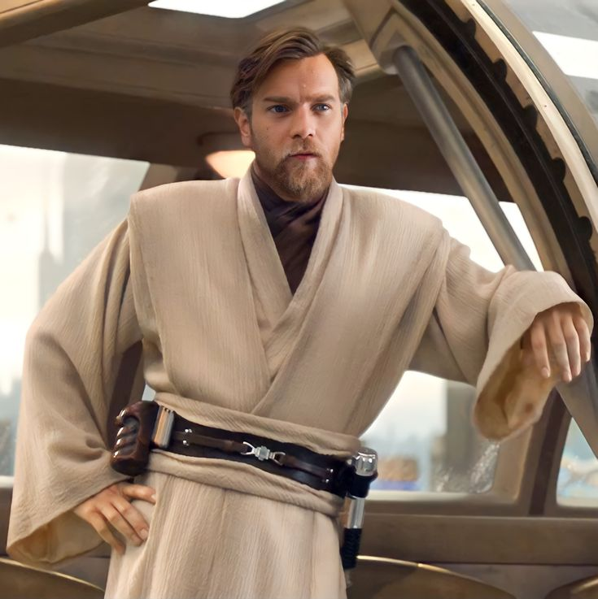
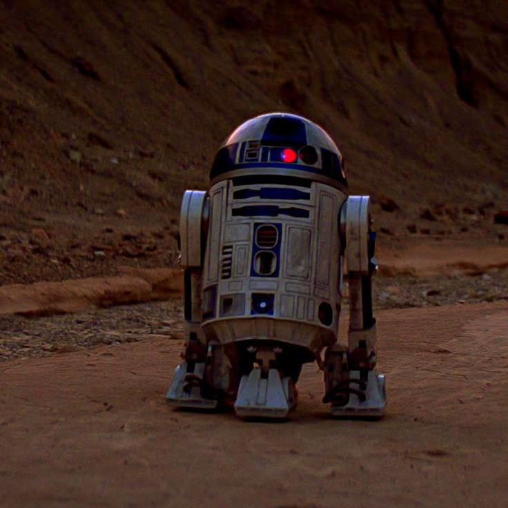
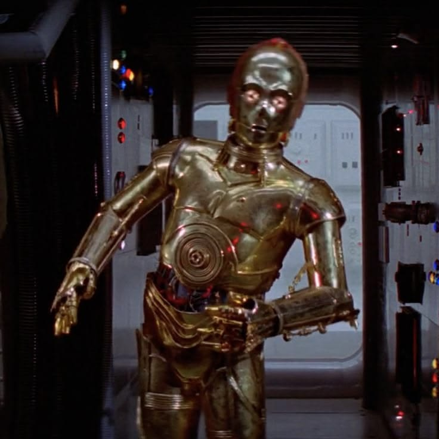

Персонажи «Звёздных войн»
Персонажи галактики
В саге «Звёздные войны» джедаи защищают мир, ситхи используют тёмную сторону Силы, а дроиды помогают живым существам.
1. Джедаи
| Персонаж | Описание |
|---|---|
 Люк Скайуокер |
Джедай, сыгравший важную роль в борьбе с Империей. Он родился на планете Татуин. |
Лея Органа | Принцесса и лидер повстанцев, боровшихся против Империи. |
 Магистр Йода | Мудрый мастер-джедай, обучавший защитников галактики. |
 Оби-Ван Кеноби | Опытный джедай и учитель Энакина и Люка Скайуокеров. |
2. Ситхи
| Персонаж | Описание |
|---|---|
 Дарт Вейдер | Ранее был джедаем Энакином Скайуокером, но перешёл на тёмную сторону Силы. |
 Палпатин | Могущественный ситх, ставший императором Галактической империи. |
3. Дроиды
| Персонаж | Описание |
|---|---|
 R2-D2 | Отважный дроид, который ремонтирует корабли и помогает героям. |
 C-3PO | Дроид-переводчик, знающий множество языков. |